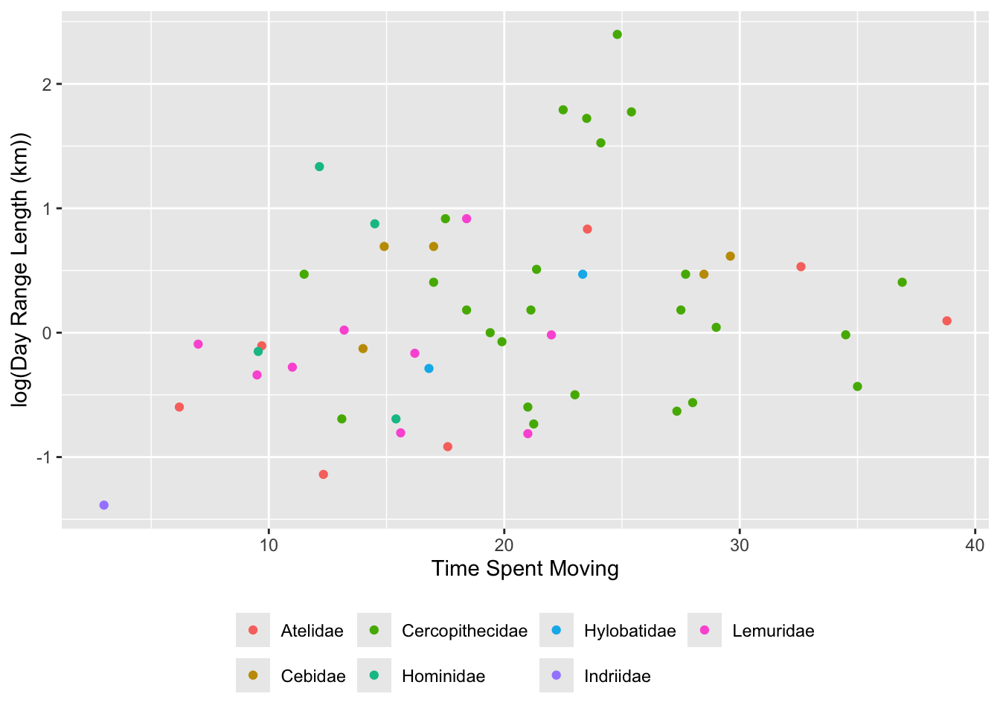
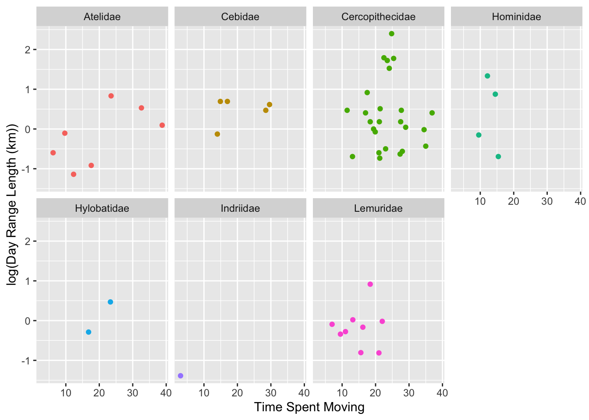
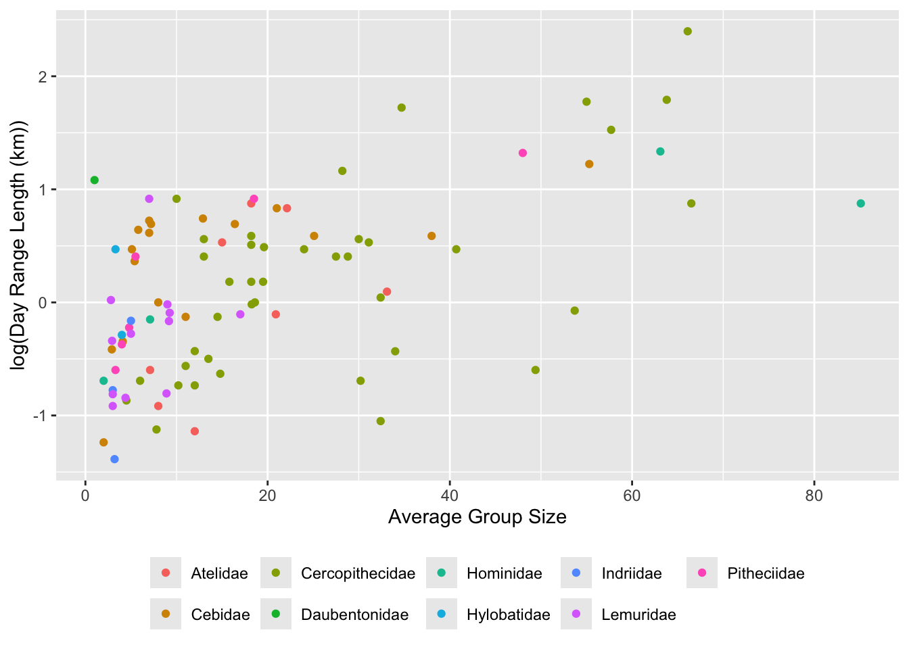
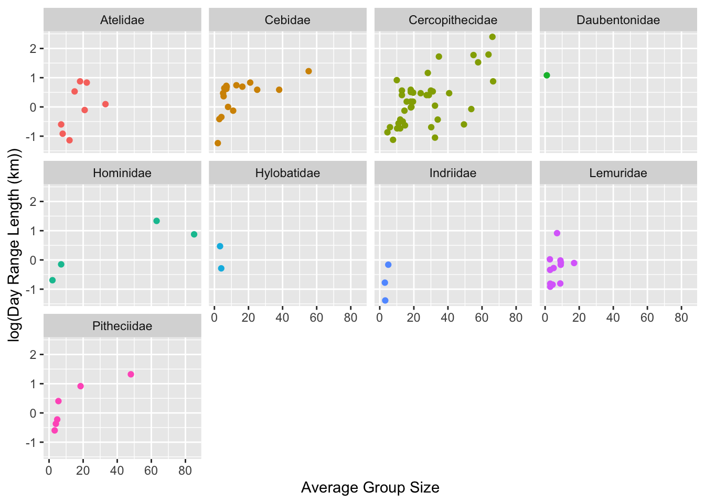
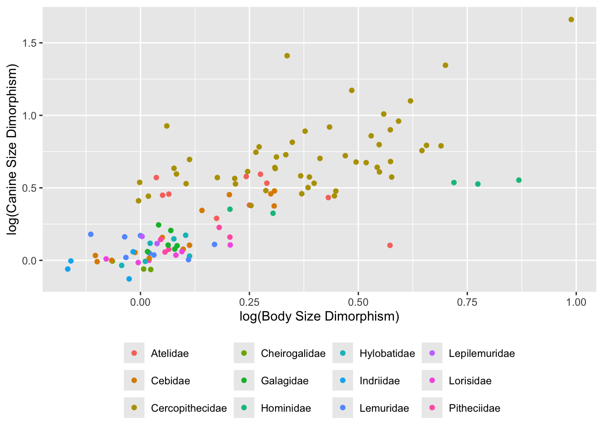
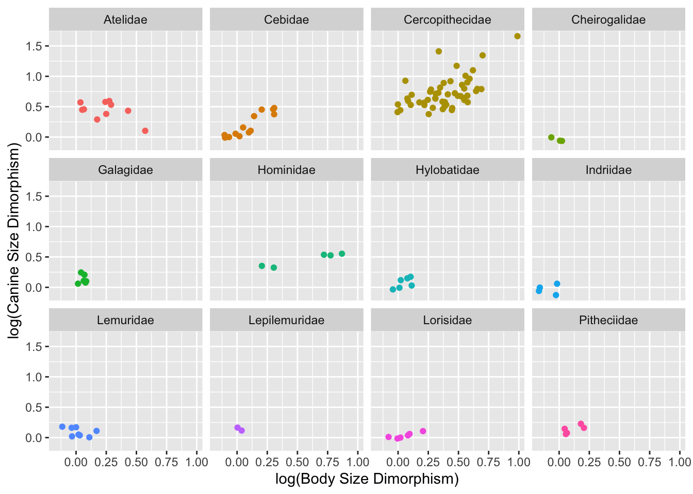
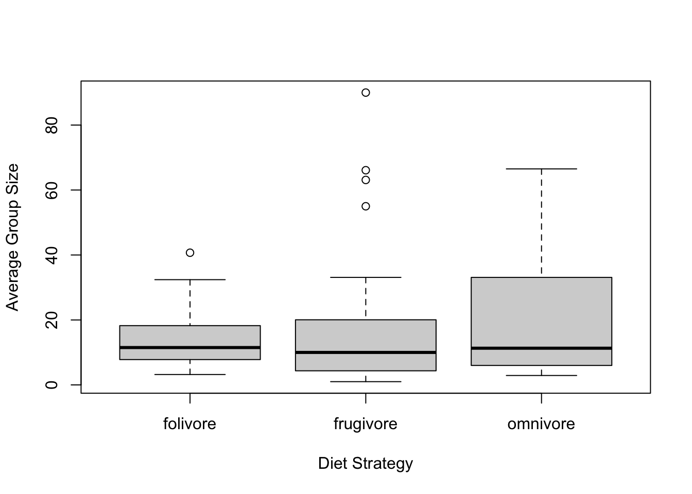

Loading in and looking at characteristics of the dataset.
library(tidyverse)
── Attaching core tidyverse packages ──────────────────────── tidyverse 2.0.0 ──
✔ dplyr 1.1.4 ✔ readr 2.1.6
✔ forcats 1.0.1 ✔ stringr 1.6.0
✔ ggplot2 4.0.1 ✔ tibble 3.3.1
✔ lubridate 1.9.4 ✔ tidyr 1.3.2
✔ purrr 1.2.1
── Conflicts ────────────────────────────────────────── tidyverse_conflicts() ──
✖ dplyr::filter() masks stats::filter()
✖ dplyr::lag() masks stats::lag()
ℹ Use the conflicted package (<http://conflicted.r-lib.org/>) to force all conflicts to become errors
f <-"https://raw.githubusercontent.com/difiore/ada-datasets/main/data-wrangling.csv"d <-read_csv(file = f, col_names =TRUE)
Rows: 213 Columns: 23
── Column specification ────────────────────────────────────────────────────────
Delimiter: ","
chr (6): Scientific_Name, Family, Genus, Species, Leaves, Fauna
dbl (17): Brain_Size_Species_Mean, Body_mass_male_mean, Body_mass_female_mea...
ℹ Use `spec()` to retrieve the full column specification for this data.
ℹ Specify the column types or set `show_col_types = FALSE` to quiet this message.
Create a new variable named BSD (body size dimorphism), the ratio of average male to female body mass.
# adding BSD using $ operator and assigning the ratio of avg. male to female body massd$BSD <- (d$Body_mass_male_mean/d$Body_mass_female_mean)
Task #2
Create a new variable named sex_ratio, the ratio of the number of adult females to males in a group.
# adding sex_ratio using $ operator and assigning the ratio of the # of males to femalesd$sex_ratio <- (d$AdultFemale/d$AdultMales)
Task #3
Create a new variable named DI (“defensibility index”), the ratio of day range length to the diameter of the home range.
# calculating diameter of home range for each speciesdiameter_homerange <-sqrt((d$HomeRange_km2/pi)) *2# rearranged area equation# adding DI using $ operator and previous assignmentd$DI <- (d$DayLength_km/diameter_homerange)
Task #4
Plot day range length (y axis) vs. time spent moving (x axis) for these primate species overall and by family. Do species that spend more time moving travel farther overall? How about within any particular primate family? Should you transform either of these variables? Why or why not?
Note: I filtered out rows that had missing values so there are no empty graphs when plotting by family.
# filtering out rows that cannot be plotted (have missing values) d_filtered <- d |>filter(!is.na(Move), !is.na(DayLength_km))# plot for day range length vs. time spent moving overallp_overall <-ggplot(data = d_filtered, aes(x = Move, y =log(DayLength_km), color =factor(Family))) +# coloring by Familyxlab("Time Spent Moving") +ylab("log(Day Range Length (km))") +geom_point(na.rm =TRUE) +theme(legend.position ="bottom", legend.title =element_blank()) # modifying legendp_overall # printing output

# plot for day range length vs. time spent moving by familyp_family <-ggplot(data = d_filtered, aes(x = Move, y =log(DayLength_km), color =factor(Family))) +xlab("Time Spent Moving") +ylab("log(Day Range Length (km))") +geom_point(na.rm =TRUE) +theme(legend.position ="none") +# removing legendfacet_wrap(~Family, ncol =4)p_family # printing output

Response: Based on the plot, I do not think that species that spend more time moving travel farther overall because there is no strong positive relationship between day range length (log-transformed) and move time. Although there are species that move more and travel farther, the data is quite variable. If time spent moving predicted day range length, you would expect to see a clear positive trend, which is not evident.
Within the Hylobatidae family, there appears to be a positive association between time spent moving and day range length; however, there are only two observations, so it is hard to conclude that move time strongly predicts distance traveled. The other primate families exhibit high within-family variability and show no consistent trend between the two variables, even in larger sample sizes.
Lastly, the day range length variable should be log-transformed, because prior to transformation, the data were right-skewed with most species exhibiting short travel distances and a few with much larger values. The transformation allowed for a more symmetric distribution and interpretation of the data as well. The move time variable does not need to be log-transformed because it does not span orders of magnitude like distance does and there is no strong skew.
Task #5
Plot day range length (y axis) vs. group size (x axis), overall and by family. Do species that live in larger groups travel farther, overall, in a day? How about within any particular primate family? Should you transform either of these variables?
Note: Again, I filtered out rows that had missing values so there are no empty graphs when plotting by family.
# Filtering out rows that cannot be plotted (have missing values) d_clean <- d |>filter(!is.na(MeanGroupSize), !is.na(DayLength_km))# plot for day range length vs. avg. group size overallp_overall <-ggplot(data = d_clean, aes(x = MeanGroupSize, y =log(DayLength_km), color =factor(Family))) +# coloring by familyxlab("Average Group Size") +ylab("log(Day Range Length (km))") +geom_point(na.rm =TRUE) +theme(legend.position ="bottom", legend.title =element_blank()) # modifying legendp_overall # printing output

# plot for day range length vs. avg. group size by familyp_family <-ggplot(data = d_clean, aes(x = MeanGroupSize, y =log(DayLength_km), color =factor(Family))) +xlab("Average Group Size") +ylab("log(Day Range Length (km))") +geom_point(na.rm =TRUE) +theme(legend.position ="none") +# removing legendfacet_wrap(~Family, ncol =4)p_family #printing output

Response: Here, there is a weak positive correlation between average group size and day range length (log-transformed), such that species in larger groups tend to travel farther per day. However, there is substantial variability, so group size alone does not strongly predict distance traveled.
There appears to be a weak positive trend between group size and distance traveled within the Pitheciidae and Cebidae families, with species in larger groups tending to travel farther. Cercopithecidae also shows an overall positive pattern, though, with variability across species. Hominidae shows a similar trend, but conclusions are limited due to fewer observations.
Again, the day range length was log-transformed since the data in this variable span orders magnitudes and are skewed before transformation. This helps with data visualization and interpretation of this variable. The average group size has a moderate range that is already interpretable without transformation and has no severe skew, so it was not log-transformed.
Task #6
Plot canine size dimorphism (y axis) vs. body size dimorphism (x axis) overall and by family. Do taxa with greater size dimorphism also show greater canine dimorphism?
# Filtering out rows that cannot be plotted (have missing values) d_pure <- d |>filter(!is.na(BSD), !is.na(Canine_Dimorphism))# plot for canine size dimorphism vs. BSD overallp_overall <-ggplot(data = d_pure, aes(x =log(BSD), y =log(Canine_Dimorphism), color =factor(Family))) +# coloring by familyxlab("log(Body Size Dimorphism)") +ylab("log(Canine Size Dimorphism)") +geom_point(na.rm =TRUE) +theme(legend.position ="bottom", legend.title =element_blank()) # editing legendp_overall # printing output

# plot for canine size dimorphism vs. BSD by familyp_family <-ggplot(data = d_pure, aes(x =log(BSD), y =log(Canine_Dimorphism), color =factor(Family))) +xlab("log(Body Size Dimorphism)") +ylab("log(Canine Size Dimorphism)") +geom_point(na.rm =TRUE) +theme(legend.position ="none") +# removing legendfacet_wrap(~Family, ncol =4)p_family # printing output

Response: I think that taxa with greater size dimorphism generally show greater canine dimorphism, as the plot shows a positive correlation between the two log-transformed variables. However, this relationship is more pronounced in certain families like Cercopithecidae and Hominidae.
By plotting by family, you can see that Cebidae similarly shows a positive trend; though, their size dimorphism is lower compared to the other two primate families that were previously mentioned.
Both variables were log-transformed, as the data were skewed are hard to interpret before transformation.
Task #7
Create a new variable named diet_strategy that is “frugivore” if fruits make up >50% of the diet, “folivore” if leaves make up >50% of the diet, and “omnivore” if diet data are available but neither of these is true. Create boxplots of group size for species with different dietary strategies. Do frugivores live in larger groups than folivores?
Here, I am creating diet_strategy using mutate() as part of {dplyr}. This allows me to add a new column to d. In the new variable, I assigned whether the observations were frugivores, folivores, or omnivores (given that their data was avaliable) based on the criteria above by using multiple if..else.. statements and passing them through case_when().
# Creating diet_strategy and using conditional statementsd <-mutate(d, diet_strategy =case_when(Fruit >=50.0~"frugivore", Leaves >=50.0~"folivore", Fruit <50.0& Leaves <50.0~"omnivore", # to combine conditionsTRUE~NA))# omitting NA categoryd_polished <- d|>filter(!is.na(diet_strategy)) # plotting group size with dietary strategiesboxplot(MeanGroupSize ~ diet_strategy,data = d_polished,xlab ="Diet Strategy",ylab ="Average Group Size",na.rm =TRUE)

Response: Based on the boxplots, frugivores generally do not live in larger groups than folivores. Although frugivores have more outliers/species of larger group size, their median group size is slightly lower than the folivore median. Additionally, the interquartile range between frugivores and folivores largely overlap and suggest a similar group size distribution between the two groups.
Task #8
In one line of code: add the variable, Binomial to the data frame (a concatenation of the Genus and Species variables), trim the data frame to only include the variables Binomial, Family, Brain_size_species_mean, and Body_mass_male_mean, group these variables by Family, calculate the average value for Brain_Size_Species_Mean and Body_mass_male_mean per Family (remember, you may need to specify na.rm = TRUE), arrange by increasing average brain size, and print the output to the console.
Note: I have added parentheses around the assignment to print the output to the console. Removing the assignment could have been done as well.
(s <- d |># adding a variable using paste() and specifying the separatormutate(Binomial =paste(Genus, Species, sep =" ")) |># selecting specific variablesselect(Binomial, Family, Brain_Size_Species_Mean, Body_mass_male_mean) |>group_by(Family) |># grouping by family# calculating mean brain size and male mass per familysummarize(avg_brain_size =mean(Brain_Size_Species_Mean, na.rm =TRUE),avg_mass_M =mean(Body_mass_male_mean, na.rm =TRUE)) |># arranging brain size by increasing arrange(avg_brain_size))